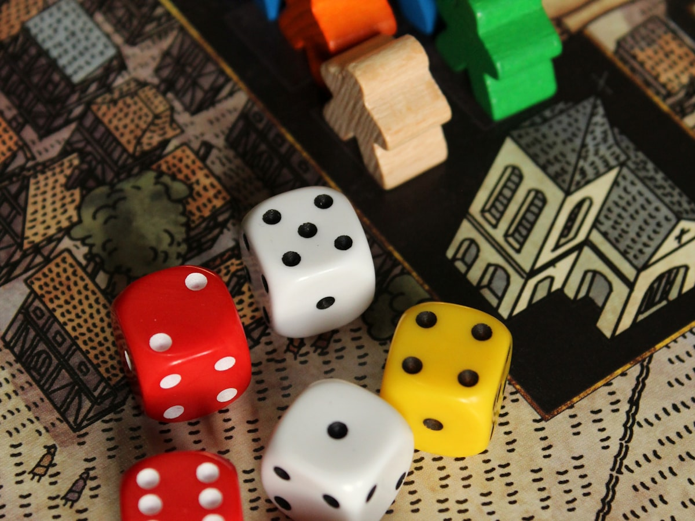

Shop
Plastic and resin kits, acrylic paints, sable brushes, scenery and rulebooks. Filter by title, colour, scale, price and quantity, then build a cart and walk it through to checkout.
Grimdark Forge is an independent hobby store and community for miniature wargamers. Buy kits, paints and terrain, argue about list-building in the forum, follow along with painting tutorials, and read reviews written by people who actually put the paint on.

Plastic and resin kits, acrylic paints, sable brushes, scenery and rulebooks. Filter by title, colour, scale, price and quantity, then build a cart and walk it through to checkout.
Rules arguments, army lists, work-in-progress threads and terrain builds. Start a thread, reply to one, and edit or delete the posts that belong to you.
Painting tutorials, basing recipes and event write-ups from the staff and the community. Search by title, author, tag or date.
Star ratings and long-form reviews of the things we sell, written by customers. Filter by product, rating, reviewer or date, and add your own.

A multi-part plastic walker with three head options and two weapon arms. Push-fit torso, no glue needed for assembly.

A thin acrylic shade that settles into recessed detail. Made for bare metal and weathered plate; thin it further for glazing.

Three natural-hair brushes that hold a point through a full session. Sized for faces, edge highlights and base coats.
Toma opened with a list that drops both walkers for a third infantry block. Fourteen replies in and nobody has changed their mind, but the maths is getting sharper.
Most edge highlights read as chalk because the last pass is too opaque and too wide. Renn walks through thinning ratios and where to stop.
Oksana put two pots through a full squad of vehicles and reports back on flow, drying time and how it behaves over a gloss coat.